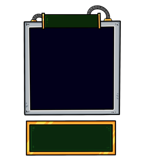
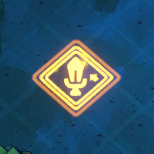

Thẻ buff & item (57)
57 thẻ buff/item (eItemType 3001–3071), mỗi thẻ là một class con của ABaseBuffSettingData với logic riêng: buff tháp có thời hạn (DurationType TIME 10–30 s / ROUND / PERMANENT) như Damage Up ×2 15 s, Range Up ×2, Speed ×1.5, Crit +50 %, Overcharge (+3 rate 10
Mô tả
- 57 thẻ buff/item (eItemType 3001–3071), mỗi thẻ là một class con của ABaseBuffSettingData với logic riêng: buff tháp có thời hạn (DurationType TIME 10–30 s / ROUND / PERMANENT) như Damage Up ×2 15 s, Range Up ×2, Speed ×1.5, Crit +50 %, Overcharge (+3 rate 10 s), on-hit (Stun, Lightning, Burn, Poison, Freeze, Grab, Execute, Vulnerable), on-kill (Double Coin, Arcane missile, Speed). Item card (IsItemCard) dùng trên sân: crystal hệ (tạo boost tile 4 ô), Massive Bomb, Chrono Crystal, Bottled Storm, Mirror Cube, Void Crystal, Player Portal, Prismatic Gear, Gilding Wand, Fire Tornado Scroll… Skill nhân vật (Overcharge, Focus Fire, Unlock, Chrono Bubble, Royal Guard, Mana Retraction, Scrap Master) cũng là buff card ẩn.
- RequestStartBuffSelection(buffData): SetupBuffAreaGridIndicator (SkillAreaRange 1–5, RangeIndicatorType), UseGrid; chọn mục tiêu theo TargetType (tháp / vị trí / quái); ConfirmBuffSelection → RequestGiveBuffToTower(tower, buff, isFromPlayer) → ABaseTower.OnBuffCardApply: AddBuffMultiplier(list_Stats) với timeLimit (IsDurationStacked cộng thời gian, IsEffectStacked chồng hiệu ứng), list_AppliedBuff; OnApplyBuff event (UI_ShowBuffApplyText). Hết hạn OnTowerBuffExpired. Sorcerer: hiệu ứng vĩnh viễn. IsShootingEffect/IsHitTargetEffect hook vào OnTowerShoot/OnTowerHit. Item card: RequestCastBuffAtPosition; ItemUsageCount lượt dùng (Chrono Crystal 3, Bottled Storm 5, Insta-Death Book 3…).
Hình minh hoạ


Lưu ý
Mở khóa & điểm vào
Thẻ buff mua ở shop (storeCost 10–20), rương (BUFF_CARD weight 2), Sorcerer 2/vòng, perk EXTRA_BUFF_CARD_EVERY_ROUND; item card từ mechanic (crystal, quest, academy).
Điểm vào:
- Kéo thẻ buff → BUFF_MODE: RequestStartBuffSelection → chọn tháp/ô → ConfirmBuffSelection
- RequestImmediateBuffCast (thẻ toàn màn)
- SKILL_1/2/3 (skill nhân vật)
Cách hoạt động
- Dùng buff lên tháp: RequestStartBuffSelection → BUFF_MODE (control scheme) → Click tháp → ConfirmBuffSelection → OnBuffCardApply → AddBuffMultiplier(stat, mod, value, Duration_Time) → Thẻ rời tay; PlayAnim_ApplyBuff (Quy tắc: Chrono Traveler Overcharge 2 lần/vòng; talent OVERLOAD mở Overcharge)
- Overcharge / Focus Fire / Unlock (skill): Overcharge (3008): RATE +3 trong 10 s; Scrap Master: mini-game eOverchargeType → Focus Fire (3033): RequestSetFocusFireMonster → mọi tháp ưu tiên quái đó → Unlock (3032): OnlyToLockedTetris → mở khoá 1 khối → RequestBanCharacterSkills khi anomaly; Shard Player L1: skill tốn vàng
- Item card trên sân: RequestCastBuffAtPosition(position) với SkillAreaRange → Ví dụ Fire Crystal (3053): tạo Fire Boost tile bán kính 4; Massive Bomb (3058) area 2; Void Crystal (3052) 4.5; Mirror Cube (3064) tạo Mirror tile; Chrono Crystal (3060) 3.5, 3 lượt → ConsumeItemUseCount; hết lượt → REMOVED
- Buff hết hạn: TowerBuffModule đếm; RemoveBuffMultiplier(id) → OnBuffCardExpired → OnBuffCardExpiredProc; list_AppliedBuff remove → Sorcerer skill 2: không hết hạn
Luồng chi tiết theo code
RequestStartBuffSelection(buffData): SetupBuffAreaGridIndicator (SkillAreaRange 1–5, RangeIndicatorType), UseGrid; chọn mục tiêu theo TargetType (tháp / vị trí / quái); ConfirmBuffSelection → RequestGiveBuffToTower(tower, buff, isFromPlayer) → ABaseTower.OnBuffCardApply: AddBuffMultiplier(list_Stats) với timeLimit (IsDurationStacked cộng thời gian, IsEffectStacked chồng hiệu ứng), list_AppliedBuff; OnApplyBuff event (UI_ShowBuffApplyText). Hết hạn OnTowerBuffExpired. Sorcerer: hiệu ứng vĩnh viễn. IsShootingEffect/IsHitTargetEffect hook vào OnTowerShoot/OnTowerHit. Item card: RequestCastBuffAtPosition; ItemUsageCount lượt dùng (Chrono Crystal 3, Bottled Storm 5, Insta-Death Book 3…).
Số liệu chính
| Chỉ số | Giá trị | Nguồn |
|---|---|---|
| Buff cards | 3001 DMG ×2 15s; 3002 RANGE ×2 15s; 3003 RATE ×1.5 15s; 3004 CRIT +50 20s; 3005 DMG +1.5 RATE −0.3 20s; 3008 Overcharge RATE +3 10s; 3009 Stun 20s; 3010 Lightning 30s; 3024 Double Coin 30s; 3026 Area Freeze 30s; 3027 Burn 20s; 3028 Execute 15s; 3029 Vulnerable 20s; 3031 Poison 20s; 3036 Speed on kil | Resources/buffcarddata |
| Item cards | 3045 Incinerate Barrier; 3046/3047 Red/Blue Upgrade Kit; 3049 Cleanse area 4; 3051 1x1 Block Pack; 3052–3057 crystal (area 4/4.5); 3058 Massive Bomb (2); 3059 Element grid 4.5 ×5; 3060 Chrono Crystal 3.5 ×3; 3061 Ancient Shield; 3063 Bottled Storm 4.5 ×5; 3064 Mirror Cube; 3065 Corrupt Crystal; 3066 | Resources/buffcarddata |
| eBuffDurationType | TIME 0, ROUND 1, PERMANENT 2 | enum |
| eBuffTargetType | 0 tower, 1 locked tetris, 2 monster, 3 position, 4 self/global (suy luận theo dữ liệu) | ABaseBuffSettingData.eBuffTargetType |
Use case (4)
Bấm vào từng use case để mở. Mở/đóng tất cả
UC-01 Dùng buff lên tháp
Các bước- RequestStartBuffSelection → BUFF_MODE (control scheme)
- Click tháp → ConfirmBuffSelection
- OnBuffCardApply → AddBuffMultiplier(stat, mod, value, Duration_Time)
- Thẻ rời tay; PlayAnim_ApplyBuff
| Actor | Player |
|---|---|
| Trigger | Kéo thẻ 3001.. |
| Điều kiện | Tháp canReceiveBuffCardEffect |
| Kết quả | Ví dụ Damage Up: DMG ×2 trong 15 s; stack thời gian nếu IsDurationStacked |
| Quy tắc / số liệu | Chrono Traveler Overcharge 2 lần/vòng; talent OVERLOAD mở Overcharge |
| Evidence | eGameEvents.RequestStartBuffSelection/ConfirmBuffSelection; ABaseTower.OnBuffCardApply; ABaseTower.AddBuffMultiplier |
UC-02 Overcharge / Focus Fire / Unlock (skill)
Các bước- Overcharge (3008): RATE +3 trong 10 s; Scrap Master: mini-game eOverchargeType
- Focus Fire (3033): RequestSetFocusFireMonster → mọi tháp ưu tiên quái đó
- Unlock (3032): OnlyToLockedTetris → mở khoá 1 khối
- RequestBanCharacterSkills khi anomaly; Shard Player L1: skill tốn vàng
| Actor | Player |
|---|---|
| Trigger | SKILL_1..3 |
| Điều kiện | Talent OVERLOAD / SKILL_FOCUS_FIRE / SKILL_UNLOCK; 1 lần/vòng |
| Evidence | TowerOverchargeBuff; FocusFireBuff; UnlockBuff; MonsterManager.OnRequestSetFocusFireMonster |
UC-03 Item card trên sân
Các bước- RequestCastBuffAtPosition(position) với SkillAreaRange
- Ví dụ Fire Crystal (3053): tạo Fire Boost tile bán kính 4; Massive Bomb (3058) area 2; Void Crystal (3052) 4.5; Mirror Cube (3064) tạo Mirror tile; Chrono Crystal (3060) 3.5, 3 lượt
- ConsumeItemUseCount; hết lượt → REMOVED
| Actor | Player |
|---|---|
| Trigger | Thẻ IsItemCard |
| Điều kiện | NeedGroundToCast tuỳ thẻ |
| Evidence | eGameEvents.RequestCastBuffAtPosition; CardData.ConsumeItemUseCount; FireCrystalBuff; MassiveBombBuff |
UC-04 Buff hết hạn
Các bước- TowerBuffModule đếm; RemoveBuffMultiplier(id)
- OnBuffCardExpired → OnBuffCardExpiredProc; list_AppliedBuff remove
- Sorcerer skill 2: không hết hạn
| Actor | System |
|---|---|
| Trigger | timeLimit/round hết |
| Evidence | ABaseTower.OnBuffCardExpired; ABaseTower.RemoveBuffMultiplier |
Cấu hình (4)
Gộp mọi nguồn: const trong code, JSON mặc định trong Resources, bảng static, storage key, AB test, cờ server.
| Nguồn | Key | Kiểu | Giá trị | Ý nghĩa | Nơi định nghĩa |
|---|---|---|---|---|---|
| asset | Buff cards | table | 3001 DMG ×2 15s; 3002 RANGE ×2 15s; 3003 RATE ×1.5 15s; 3004 CRIT +50 20s; 3005 DMG +1.5 RATE −0.3 20s; 3008 Overcharge RATE +3 10s; 3009 Stun 20s; 3010 Lightning 30s; 3024 Double Coin 30s; 3026 Area Freeze 30s; 3027 Burn 20s; 3028 Execute 15s; 3029 Vulnerable 20s; 3031 Poison 20s; 3036 Speed on kill 30s; 3037 Area slow 10s | Đầy đủ appendix/buffcards.md | Resources/buffcarddata |
| asset | Item cards | table | 3045 Incinerate Barrier; 3046/3047 Red/Blue Upgrade Kit; 3049 Cleanse area 4; 3051 1x1 Block Pack; 3052–3057 crystal (area 4/4.5); 3058 Massive Bomb (2); 3059 Element grid 4.5 ×5; 3060 Chrono Crystal 3.5 ×3; 3061 Ancient Shield; 3063 Bottled Storm 4.5 ×5; 3064 Mirror Cube; 3065 Corrupt Crystal; 3066 Insta-Death Book ×3; 3067 Player Portal 1.5 ×2; 3068 Gilding Wand 4.5 ×5 (5s); 3069 Prismatic Gear ×5; 3070 Energy Focus Wand 3.5 ×5; 3071 Fire Tornado Scroll 2 ×5 | Resources/buffcarddata | |
| enum | eBuffDurationType | enum | TIME 0, ROUND 1, PERMANENT 2 | enum | |
| enum | eBuffTargetType | enum | 0 tower, 1 locked tetris, 2 monster, 3 position, 4 self/global (suy luận theo dữ liệu) | ABaseBuffSettingData.eBuffTargetType |
Giao diện (UI)
| Element | Class | Mục đích |
|---|---|---|
| Buff area indicator | SetupBuffAreaGridIndicator | Ô ảnh hưởng |
| Buff text | UI_ShowBuffApplyText | Thông báo hiệu ứng |
Chưa đọc được / ghi chú
- Giá trị cụ thể của on-hit buff (stun s, burn s, execute %) nằm trong class từng buff
- Tên enum eBuffTargetType chưa dump được — giá trị mapping là suy luận
Tính năng liên quan
Tháp (Towers) Thẻ, deck & rút bài Kỹ năng người chơi (Overcharge/Focus Fire/Unlock) Nhân vật (11) Cơ chế màn theo world
Nguồn đã đọc
- appendix/buffcards.md
- features/ABaseBuffSettingData.md
- features/BuffEffectHandler.md